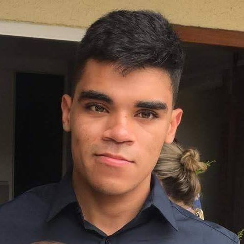

Nascido e criado em uma periferia de Belo Horizonte, o menino Rubio, aos 10 anos, ganhou seu primeiro computador(windows 95) e com seus incriveis 10gb começou a aprender fazer manutenção e construir jogos online estilo mmorpg e como era apaixonado dos esportes conciliava também uma carreira promissora de futebol.
Set 2007Paralelamente às suas atividades no esporte e em sua ecola municipal, o pequeno Rubio obteve algumas bolsas em cursos de informática e foi se especializando em redes, manutenção e programação.
Feb 2010Após ser aprovado no colégio Tiradentes da PMMG, Rubio também iniciou seu curso técnico em eletrotécnica, onde pode aprofundar seus estudos em eletrônica.
Feb 2013Rubio se destacou em automação usando embarcados, isso deu a ele seu primeiro estágio na área de automação residêncial
Out 2014Meu primeiro estágio, como dito a cima, foi na área de automação residêncial pela empresa EX-po Engenharia.
Lá pude entrar em contato com a programação no mercado.
Set 2015Para ter certeza de qual área queria seguir, iniciei a faculdade de física, onde pude entrar em contato com a área do conhecimento, ou melhor, de como passar ele para as pessoas em diferentes situações.
Feb 2016Nesse tempo, me interessei em abrir um projeto social na comunidade, para isso, estudei sobre essa área e para abrangir mais o publico, fiz um curso de intervenção pedagógica com autista e abri meu primeiro projeto voluntário visando difundir a informática para a periferia.
Fev 2016Tendo certeza da área que gostaria de seguir, fui aprovado em engenharia de computação pelo CEFET-MG.
Ago 2016Tive a oportunidade de dar monitoria da matéria Algoritmos e estrutura de dados I, onde pude aprofundar meus conhecimentos sobre a área.
Out 2018Estou tendo a oportunidade de pesquisar sobre qualidade da web e data science.
Jul 2018Comecei a fazer estágio no Núcleo de Tecnologia da Informação do CEFET/MG.
Nov 2018Comecei a fazer estágio na área de infraestrutura de TI e Telecom.
Jan 2019Comecei a fazer estágio na área de desenvolvimento de software full stack.
Dez 2019Estou tendo a oportunidade de pesquisar sobre Bioinformática.
Jul 2018